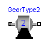
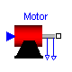
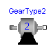
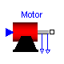
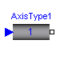
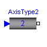
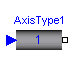
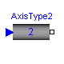
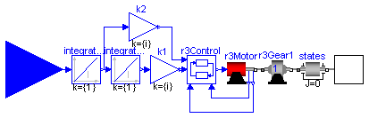
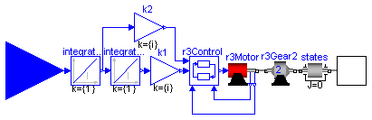

 






The axis model consists of the controller, the motor including current controller and the gearbox including gear elasticity and bearing friction. The only difference to the axis model of joints 4,5,6 (= model axisType2) is that elasticity and damping in the gear boxes are not neglected. The component States is a dummy inertia, i.e., the inertia is zero, to define that the absolute angle and the absolute angular velocity of the driven gear flange are used as states.
The input signal of this component is the desired angular acceleration of the joint (= reference acceleration). From the acceleration, the reference position and reference velocity are computed via integration. The reference input is an acceleration, because the reference signals have to be "smooth" (position has to be differentiable at least 2 times). Otherwise, the gear elasticity leads to significant oscillations which are not acceptable.
Default values of the parameters are given for the axis of joint 1.
| Name | Default | Description |
|---|---|---|
| phi_ref0 | 0 | initial value of reference and joint angle [rad] |
| w_ref0 | 0 | initial value of reference and joint speed [rad/s] |
| k | 1.1616 | gain of motor |
| w | 4590 | time constant of motor |
| D | 0.6 | damping constant of motor |
| J | 0.0013 | moment of inertia of motor in [kgm^2] |
| i | -105 | gear ratio |
| c | 43 | spring constant |
| cd | 0.005 | damper constant |
| Rv0 | 0.4 | viscous friction torque at zero velocity in [Nm] |
| Rv1 | (0.13/160) | viscous friction coefficient in [Nms/rad] |
| peak | 1 | peak*Rv0 = maximum static friction torque (peak >= 1) |
model AxisType1 "Axis model of the r3 joints 1,2,3 "
parameter SI.Angle phi_ref0=0 "initial value of reference and joint angle";
parameter SI.AngularVelocity w_ref0=0 "initial value of reference and joint speed";
parameter Real k=1.1616 "gain of motor";
parameter Real w=4590 "time constant of motor";
parameter Real D=0.6 "damping constant of motor";
parameter Real J=0.0013 "moment of inertia of motor in [kgm^2]";
parameter Real i=-105 "gear ratio";
parameter Real c=43 "spring constant";
parameter Real cd=0.005 "damper constant";
parameter Real Rv0=0.4 "viscous friction torque at zero velocity in [Nm]";
parameter Real Rv1=(0.13/160) "viscous friction coefficient in [Nms/rad]";
parameter Real peak=1 "peak*Rv0 = maximum static friction torque (peak >= 1)"
;
SI.AngularAcceleration a_ref;
SI.AngularVelocity w_ref;
SI.Angle phi_ref;
Modelica.Blocks.Interfaces.InPort inPort_a_ref;
Modelica.Mechanics.Rotational.Interfaces.Flange_b flange;
GearType1 r3Gear1(
J=J,
i=i,
c=c,
d=cd,
Rv0=Rv0,
Rv1=Rv1,
peak=peak);
Motor r3Motor(
k=k,
wm=w,
D=D);
Control r3Control;
Modelica.Blocks.Continuous.Integrator integrator1(final y0={w_ref0});
Modelica.Blocks.Continuous.Integrator integrator2(final y0={phi_ref0});
Modelica.Blocks.Math.Gain k2(k={i});
Modelica.Blocks.Math.Gain k1(k={i});
Modelica.Mechanics.Rotational.Inertia states(
J=0,
phi(start=phi_ref0, fixed=true),
w(start=w_ref0, fixed=true));
equation
connect(k1.outPort, r3Control.phi_ref);
connect(r3Motor.outPort_w, r3Control.w);
connect(r3Motor.outPort_phi, r3Control.phi);
connect(integrator1.outPort, integrator2.inPort);
connect(r3Control.i_ref, r3Motor.i_ref);
connect(integrator2.outPort, k1.inPort);
connect(integrator1.outPort, k2.inPort);
connect(r3Motor.flange_motor, r3Gear1.flange_a);
connect(integrator1.inPort, inPort_a_ref);
connect(k2.outPort, r3Control.w_ref);
connect(r3Gear1.flange_b, states.flange_a);
connect(states.flange_b, flange);
a_ref = inPort_a_ref.signal[1];
w_ref = integrator1.outPort.signal[1];
phi_ref = integrator2.outPort.signal[1];
end AxisType1;

The axis model consists of the controller, the motor including current controller and the gearbox including gear elasticity and bearing friction. The only difference to the axis model of joints 1,2,3 (= model axisType1) is elasticity and damping in the gear boxes are neglected. The component States is a dummy inertia, i.e., the inertia is zero, to define that the absolute angle and the absolute angular velocity of the driven gear flange are used as states.
The input signal of this component is the desired angular acceleration of the joint (= reference acceleration). From the acceleration, the reference position and reference velocity are computed via integration. The reference input is an acceleration, because the reference signals have to be "smooth" (position has to be differentiable at least 2 times). Otherwise, the gear elasticity leads to significant oscillations which are not acceptable.
Default values of the parameters are given for the axis of joint 1.
| Name | Default | Description |
|---|---|---|
| phi_ref0 | 0 | initial value of reference and of joint angle [rad] |
| w_ref0 | 0 | initial value of reference and joint speed [rad/s] |
| k | 0.2365 | gain of motor |
| w | 6250 | time constant of motor |
| D | 0.55 | damping constant of motor |
| J | 1.6e-4 | moment of inertia of motor in [kgm^2] |
| i | -99 | gear ratio |
| Rv0 | 21.8 | viscous friction torque at zero velocity in [Nm] |
| Rv1 | 9.8 | viscous friction coefficient in [Nms/rad] (R=Rv0+Rv1*abs(qd)) |
| peak | (26.7/21.8) | peak*Rv0 = maximum static friction torque (peak >= 1) |
model AxisType2 "Axis model of the r3 joints 4,5,6 "
parameter SI.Angle phi_ref0=0 "initial value of reference and of joint angle";
parameter SI.AngularVelocity w_ref0=0 "initial value of reference and joint speed";
parameter Real k=0.2365 "gain of motor";
parameter Real w=6250 "time constant of motor";
parameter Real D=0.55 "damping constant of motor";
parameter Real J=1.6e-4 "moment of inertia of motor in [kgm^2]";
parameter Real i=-99 "gear ratio";
parameter Real Rv0=21.8 "viscous friction torque at zero velocity in [Nm]";
parameter Real Rv1=9.8
"viscous friction coefficient in [Nms/rad] (R=Rv0+Rv1*abs(qd))";
parameter Real peak=(26.7/21.8)
"peak*Rv0 = maximum static friction torque (peak >= 1)";
SI.AngularAcceleration a_ref;
SI.AngularVelocity w_ref;
SI.Angle phi_ref;
Modelica.Blocks.Interfaces.InPort inPort_a_ref;
Modelica.Mechanics.Rotational.Interfaces.Flange_b flange;
GearType2 r3Gear2(
J=J,
i=i,
Rv0=Rv0,
Rv1=Rv1,
peak=peak);
Motor r3Motor(
k=k,
wm=w,
D=D);
Control r3Control;
Modelica.Blocks.Continuous.Integrator integrator1(final y0={w_ref0});
Modelica.Blocks.Continuous.Integrator integrator2(final y0={phi_ref0});
Modelica.Blocks.Math.Gain k2(k={i});
Modelica.Blocks.Math.Gain k1(k={i});
Modelica.Mechanics.Rotational.Inertia states(
J=0,
phi(start=phi_ref0, fixed=true),
w(start=w_ref0, fixed=true));
equation
connect(integrator1.outPort, integrator2.inPort);
connect(r3Control.i_ref, r3Motor.i_ref);
connect(r3Motor.flange_motor, r3Gear2.flange_a);
connect(k1.outPort, r3Control.phi_ref);
connect(integrator2.outPort, k1.inPort);
connect(integrator1.outPort, k2.inPort);
connect(r3Motor.outPort_w, r3Control.w);
connect(r3Motor.outPort_phi, r3Control.phi);
connect(k2.outPort, r3Control.w_ref);
connect(integrator1.inPort, inPort_a_ref);
connect(r3Gear2.flange_b, states.flange_a);
connect(states.flange_b, flange);
a_ref = inPort_a_ref.signal[1];
w_ref = integrator1.outPort.signal[1];
phi_ref = integrator2.outPort.signal[1];
end AxisType2;
ModelicaAdditions.MultiBody.Examples.Robots.r3.Components.MechanicalStructure

This model contains the mechanical components of the r3 robot (multibody system) including animation information.
| Name | Default | Description |
|---|---|---|
| loadSize[3] | {0.125,0.05,0.05} | size of (steel) load box [m] |
model MechanicalStructure
"Model of the mechanical part of the r3 robot "
parameter SI.Length loadSize[3]={0.125,0.05,0.05} "size of (steel) load box";
SI.Angle q[6] "joint angles";
SI.AngularVelocity qd[6] "joint speeds";
SI.AngularAcceleration qdd[6] "joint accelerations";
SI.Torque tau[6] "joint driving torques";
Modelica.Mechanics.Rotational.Interfaces.Flange_a axis1;
Modelica.Mechanics.Rotational.Interfaces.Flange_a axis2;
Modelica.Mechanics.Rotational.Interfaces.Flange_a axis3;
Modelica.Mechanics.Rotational.Interfaces.Flange_a axis4;
Modelica.Mechanics.Rotational.Interfaces.Flange_a axis5;
Modelica.Mechanics.Rotational.Interfaces.Flange_a axis6;
Parts.InertialSystem inertial;
Joints.Revolute r1(n={0,1,0});
Joints.Revolute r2(n={1,0,0});
Joints.Revolute r3(n={1,0,0});
Joints.Revolute r4(n={0,1,0});
Joints.Revolute r5(n={1,0,0});
Joints.Revolute r6(n={0,1,0});
Parts.Shape b0(
Shape="cylinder",
r0={0,-0.4,0},
LengthDirection={0,1,0},
WidthDirection={1,0,0},
Length=0.225,
Width=0.3,
Height=0.3,
Material={0,0,1,1});
Parts.ShapeBody b1(
r={0,0,0},
I22=1.16,
Shape="box",
r0={0,-0.175,0},
LengthDirection={0,1,0},
WidthDirection={1,0,0},
Length=0.25,
Width=0.15,
Height=0.2,
Material={1,0,0,0.5});
Parts.ShapeBody b2(
r={0,0.5,0},
rCM={0.172,0.205,0},
m=56.5,
I11=2.58,
I22=0.64,
I33=2.73,
I21=-0.46,
Shape="beam",
r0={0.15,0,0},
LengthDirection={0,1,0},
WidthDirection={0,0,1},
Length=0.5,
Width=0.2,
Height=0.15,
Material={1,0.7,0,1});
Parts.ShapeBody b3(
r={0,0,0},
rCM={0.064,-0.034,0},
m=26.4,
I11=0.279,
I22=0.245,
I33=0.413,
I21=-0.070,
Shape="box",
r0={0,-0.075,0},
LengthDirection={0,1,0},
WidthDirection={1,0,0},
Length=0.15,
Width=0.15,
Height=0.15,
Material={1,0,0,0.5});
Parts.ShapeBody b4(
r={0,0.73,0},
rCM={0,0.32,0},
m=28.7,
I11=1.67,
I22=0.081,
I33=1.67,
Shape="cylinder",
r0={0,0.075,0},
LengthDirection={0,1,0},
WidthDirection={1,0,0},
Length=0.73,
Width=0.1,
Height=0.1,
Material={1,0.7,0,1});
Parts.ShapeBody b5(
r={0,0,0},
rCM={0,0.023,0},
m=5.2,
I11=1.25,
I22=0.81,
I33=1.53,
Shape="box",
r0={0,-0.075,0},
LengthDirection={0,1,0},
WidthDirection={1,0,0},
Length=0.225,
Width=0.075,
Height=0.1,
Material={0,0,1,0.5});
Parts.BoxBody load(
r={0,0,0},
r0={0,0.15,0},
LengthDirection={0,1,0},
WidthDirection={1,0,0},
Length=(loadSize[1]),
Width=(loadSize[2]),
Height=(loadSize[3]),
Material={1,0,0,0.5});
equation
connect(inertial.frame_b, b0.frame_a);
connect(r1.frame_a, inertial.frame_b);
connect(r1.frame_b, b1.frame_a);
connect(b1.frame_b, r2.frame_a);
connect(r2.frame_b, b2.frame_a);
connect(b2.frame_b, r3.frame_a);
connect(r3.frame_b, b3.frame_a);
connect(r4.frame_b, b4.frame_a);
connect(r3.frame_b, r4.frame_a);
connect(b4.frame_b, r5.frame_a);
connect(r5.frame_b, b5.frame_a);
connect(r6.frame_b, load.frame_a);
connect(r5.frame_b, r6.frame_a);
connect(r1.axis, axis1);
connect(r2.axis, axis2);
connect(r4.axis, axis4);
connect(r5.axis, axis5);
connect(r6.axis, axis6);
connect(r3.axis, axis3);
q = {r1.q,r2.q,r3.q,r4.q,r5.q,r6.q};
qd = der(q);
qdd = der(qd);
tau = {r1.axis.tau,r2.axis.tau,r3.axis.tau,r4.axis.tau,r5.axis.tau,r6.axis.
tau};
end MechanicalStructure;
ModelicaAdditions.MultiBody.Examples.Robots.r3.Components.FullRobot

Complete model of Mantuec r3 robot, including controller, motor, gearbox, 3D-mechanics model. The input connectors a_refX are the reference accelerations, i.e., the desired accelerations, for the 6 joint axes. Via parameter q0 the initial joint angles are defined.
| Name | Default | Description |
|---|---|---|
| q0[6] | initial joint angles [rad] |
model FullRobot "Complete model of Manutec r3 robot "
parameter SI.Angle q0[6] "initial joint angles";
output SI.Angle q_ref[6] "reference values of joint angles";
output SI.AngularVelocity qd_ref[6] "reference values of joint speeds";
output SI.AngularAcceleration qdd_ref[6]
"reference values of joint accelerations";
output SI.Angle eq[6] "control errors of joint angles";
output SI.AngularVelocity eqd[6] "control errors of joint speeds";
MechanicalStructure mechanics;
AxisType1 axis1(phi_ref0=q0[1]);
AxisType1 axis2(
w=5500,
i=210,
c=8,
cd=0.01,
Rv0=0.5,
Rv1=(0.1/130),
phi_ref0=q0[2]);
AxisType1 axis3(
w=5500,
i=60,
c=58,
cd=0.04,
Rv0=0.7,
Rv1=(0.2/130),
phi_ref0=q0[3]);
AxisType2 axis4(phi_ref0=q0[4]);
AxisType2 axis5(
k=0.2608,
J=1.8e-4,
i=79.2,
Rv0=30.1,
Rv1=0.03,
peak=(39.6/30.1),
phi_ref0=q0[5]);
AxisType2 axis6(
k=0.0842,
w=7400,
D=0.27,
J=4.3e-5,
i=-99,
Rv0=10.9,
Rv1=3.92,
peak=(16.8/10.9),
phi_ref0=q0[6]);
Modelica.Blocks.Interfaces.InPort a_ref1;
Modelica.Blocks.Interfaces.InPort a_ref2;
Modelica.Blocks.Interfaces.InPort a_ref3;
Modelica.Blocks.Interfaces.InPort a_ref4;
Modelica.Blocks.Interfaces.InPort a_ref5;
Modelica.Blocks.Interfaces.InPort a_ref6;
equation
connect(axis1.flange, mechanics.axis1);
connect(axis2.flange, mechanics.axis2);
connect(axis3.flange, mechanics.axis3);
connect(axis4.flange, mechanics.axis4);
connect(axis5.flange, mechanics.axis5);
connect(axis6.flange, mechanics.axis6);
connect(axis1.inPort_a_ref, a_ref1);
connect(axis6.inPort_a_ref, a_ref6);
connect(axis5.inPort_a_ref, a_ref5);
connect(axis4.inPort_a_ref, a_ref4);
connect(axis3.inPort_a_ref, a_ref3);
connect(axis2.inPort_a_ref, a_ref2);
q_ref = {axis1.phi_ref,axis2.phi_ref,axis3.phi_ref,axis4.phi_ref,axis5.
phi_ref,axis6.phi_ref};
qd_ref = {axis1.w_ref,axis2.w_ref,axis3.w_ref,axis4.w_ref,axis5.w_ref,axis6.
w_ref};
qdd_ref = {a_ref1.signal[1],a_ref2.signal[1],a_ref3.signal[1],a_ref4.signal[1
],a_ref5.signal[1],a_ref6.signal[1]};
eq = q_ref - mechanics.q;
eqd = qd_ref - mechanics.qd;
end FullRobot;
ModelicaAdditions.MultiBody.Examples.Robots.r3.Components.GearType1

Models the gearbox used in the first three joints with all its effects, like elasticity and friction. Coulomb friction is approximated by a friction element acting at the "motor"-side. In reality, bearing friction should be also incorporated at the driven side of the gearbox. However, this would require considerable more effort for the measurement of the friction parameters. Default values for all parameters are given for joint 1. Model relativeStates is used to define the relative angle and relative angular velocity across the spring (=gear elasticity) as state variables. The reason is, that a default initial value of zero of these states makes always sense. If the absolute angle and the absolute angular velocity of model Jmotor would be used as states, and the load angle (= joint angle of robot) is NOT zero, one has always to ensure that the initial values of the motor angle and of the joint angle are modified correspondingly. Otherwise, the spring has an unrealistic deflection at initial time. Since relative quantities are used as state variables, this simplifies the definition of initial values considerably.
| Name | Default | Description |
|---|---|---|
| J | 0.0013 | moment of inertia of motor [kg.m2] |
| i | -105 | gear ratio |
| c | 43 | spring constant |
| d | 0.005 | damper constant |
| Rv0 | 0.4 | viscous friction torque at zero velocity [N.m] |
| Rv1 | (0.13/160) | viscous friction coefficient in [Nms/rad] (R=Rv0+Rv1*abs(qd)) |
| peak | 1 | peak*Rv0 = maximum static friction torque (peak >= 1) |
model GearType1
"Motor inertia and gearbox model for r3 joints 1,2,3 "
extends Modelica.Mechanics.Rotational.Interfaces.TwoFlanges;
parameter SI.Inertia J=0.0013 "moment of inertia of motor";
parameter Real i=-105 "gear ratio";
parameter Real c=43 "spring constant";
parameter Real d=0.005 "damper constant";
parameter SI.Torque Rv0=0.4 "viscous friction torque at zero velocity";
parameter Real Rv1=(0.13/160)
"viscous friction coefficient in [Nms/rad] (R=Rv0+Rv1*abs(qd))";
parameter Real peak=1 "peak*Rv0 = maximum static friction torque (peak >= 1)"
;
Modelica.Mechanics.Rotational.Inertia Jmotor(J=J);
Modelica.Mechanics.Rotational.IdealGear gear(ratio=i);
Modelica.Mechanics.Rotational.SpringDamper spring(c=c, d=d);
Modelica.Mechanics.Rotational.RelativeStates relativeStates;
Modelica.Mechanics.Rotational.BearingFriction bearingFriction(tau_pos=[0,
Rv0; 1, Rv0 + Rv1]);
equation
connect(spring.flange_b, gear.flange_a);
connect(relativeStates.flange_b, spring.flange_b);
connect(relativeStates.flange_a, spring.flange_a);
connect(bearingFriction.flange_b, spring.flange_a);
connect(Jmotor.flange_b, bearingFriction.flange_a);
connect(Jmotor.flange_a, flange_a);
connect(gear.flange_b, flange_b);
end GearType1;

The elasticity and damping in the gearboxes of the outermost three joints of the robot is neglected. Default values for all parameters are given for joint 4.
| Name | Default | Description |
|---|---|---|
| J | 1.6e-4 | moment of inertia of motor [kg.m2] |
| i | -99 | gear ratio |
| Rv0 | 21.8 | viscous friction torque at zero velocity [N.m] |
| Rv1 | 9.8 | viscous friction coefficient in [Nms/rad] (R=Rv0+Rv1*abs(qd)) |
| peak | (26.7/21.8) | peak*Rv0 = maximum static friction torque (peak >= 1) |
model GearType2
"Motor inertia and gearbox model for r3 joints 4,5,6 "
extends Modelica.Mechanics.Rotational.Interfaces.TwoFlanges;
parameter SI.Inertia J=1.6e-4 "moment of inertia of motor";
parameter Real i=-99 "gear ratio";
parameter SI.Torque Rv0=21.8 "viscous friction torque at zero velocity";
parameter Real Rv1=9.8
"viscous friction coefficient in [Nms/rad] (R=Rv0+Rv1*abs(qd))";
parameter Real peak=(26.7/21.8)
"peak*Rv0 = maximum static friction torque (peak >= 1)";
Modelica.Mechanics.Rotational.Inertia Jmotor(J=J);
Modelica.Mechanics.Rotational.IdealGear gear(ratio=i);
Modelica.Mechanics.Rotational.BearingFriction bearingFriction(tau_pos=[0,
Rv0; 1, Rv0 + Rv1], peak=peak);
equation
connect(Jmotor.flange_a, flange_a);
connect(gear.flange_b, bearingFriction.flange_a);
connect(bearingFriction.flange_b, flange_b);
connect(Jmotor.flange_b, gear.flange_a);
end GearType2;

Default values are given for the motor of joint 1. The input of the motor is the desired current (the actual current is proportional to the torque produced by the motor).
| Name | Default | Description |
|---|---|---|
| k | 1.1616 | gain of motor |
| wm | 4590 | time constant of motor |
| D | 0.6 | damping constant of motor |
model Motor "Motor model including current controller of r3 motors " extends Modelica.Icons.MotorIcon; parameter Real k=1.1616 "gain of motor"; parameter Real wm=4590 "time constant of motor"; parameter Real D=0.6 "damping constant of motor"; Modelica.Blocks.Interfaces.InPort i_ref; Modelica.Mechanics.Rotational.Interfaces.Flange_b flange_motor; Modelica.Blocks.Interfaces.OutPort outPort_w; Modelica.Blocks.Interfaces.OutPort outPort_phi; Modelica.Electrical.Analog.Sources.SignalVoltage Vs; Modelica.Electrical.Analog.Ideal.IdealOpAmp diff; Modelica.Electrical.Analog.Ideal.IdealOpAmp power; Modelica.Electrical.Analog.Basic.EMF emf(k=k); Modelica.Electrical.Analog.Basic.Inductor La(L=(250/(2*D*wm))); Modelica.Electrical.Analog.Basic.Resistor Ra(R=250); Modelica.Electrical.Analog.Basic.Resistor Rd2(R=100); Modelica.Electrical.Analog.Basic.Capacitor C(C=0.004*D/wm); Modelica.Electrical.Analog.Ideal.IdealOpAmp OpI; Modelica.Electrical.Analog.Basic.Resistor Rd1(R=100); Modelica.Electrical.Analog.Basic.Resistor Ri(R=10); Modelica.Electrical.Analog.Basic.Resistor Rp1(R=200); Modelica.Electrical.Analog.Basic.Resistor Rp2(R=50); Modelica.Electrical.Analog.Basic.Resistor Rd4(R=100); Modelica.Electrical.Analog.Sources.SignalVoltage hall2; Modelica.Electrical.Analog.Basic.Resistor Rd3(R=100); Modelica.Electrical.Analog.Basic.Ground g1; Modelica.Electrical.Analog.Basic.Ground g2; Modelica.Electrical.Analog.Basic.Ground g3; Modelica.Electrical.Analog.Sensors.CurrentSensor hall1; Modelica.Electrical.Analog.Basic.Ground g4; Modelica.Electrical.Analog.Basic.Ground g5; Modelica.Mechanics.Rotational.Sensors.AngleSensor phi; Modelica.Mechanics.Rotational.Sensors.SpeedSensor w; equation connect(La.n, emf.p); connect(Ra.n, La.p); connect(Rd2.n, diff.n1); connect(C.n, OpI.p2); connect(OpI.p2, power.p1); connect(Vs.p, Rd2.p); connect(diff.n1, Rd1.p); connect(Rd1.n, diff.p2); connect(diff.p2, Ri.p); connect(Ri.n, OpI.n1); connect(OpI.n1, C.p); connect(power.n1, Rp1.p); connect(power.p2, Rp1.n); connect(Rp1.p, Rp2.p); connect(power.p2, Ra.p); connect(Rd3.p, hall2.p); connect(Rd3.n, diff.p1); connect(Rd3.n, Rd4.p); connect(Vs.n, g1.p); connect(g2.p, hall2.n); connect(Rd4.n, g3.p); connect(g3.p, OpI.p1); connect(hall1.outPort, hall2.inPort); connect(g5.p, Rp2.n); connect(emf.n, hall1.p); connect(hall1.n, g4.p); connect(emf.flange_b, phi.flange_a); connect(emf.flange_b, w.flange_a); connect(w.outPort, outPort_w); connect(phi.outPort, outPort_phi); connect(flange_motor, emf.flange_b); connect(OpI.n2, power.n2); connect(OpI.p1, OpI.n2); connect(OpI.p1, diff.n2); connect(Vs.inPort, i_ref); end Motor;
ModelicaAdditions.MultiBody.Examples.Robots.r3.Components.Control

For the robot 6 identical controllers are used. Therefore, this class has no parameters.
In reality, the position controller is realized in digital form (components Kv, Kd). For efficiency reasons, this controller part is modelled as continuous component. By simulation it has been shown, that the difference in the results is below the plot accuracy.
model Control "Controller model of r3 robot "
extends Modelica.Blocks.Interfaces.BlockIcon;
Modelica.Blocks.Interfaces.InPort phi_ref;
Modelica.Blocks.Interfaces.InPort w_ref;
Modelica.Blocks.Interfaces.InPort phi;
Modelica.Blocks.Interfaces.InPort w;
Modelica.Blocks.Interfaces.OutPort i_ref;
Modelica.Blocks.Continuous.TransferFunction rate2(b={9.95e-3,1}, a={
0.56e-3,1});
Modelica.Blocks.Continuous.Integrator rate3(k={340.8});
Modelica.Blocks.Continuous.TransferFunction rate1(b={40e-3,1}, a={20.2e-3,
1});
Modelica.Blocks.Continuous.FirstOrder tacho1(k={0.03}, T={8.475e-4});
Modelica.Blocks.Math.Gain Kd(k={0.03});
Modelica.Blocks.Math.Feedback wSum;
Modelica.Blocks.Math.Add sum;
Modelica.Blocks.Math.Feedback pSum;
Modelica.Blocks.Math.Gain Kv(k={0.3});
Modelica.Blocks.Continuous.TransferFunction tacho2(a={1/(2014*2014),2*
0.294/2014,1});
equation
connect(rate2.outPort, rate3.inPort);
connect(wSum.outPort, rate2.inPort);
connect(sum.outPort, wSum.inPort1);
connect(Kd.outPort, sum.inPort1);
connect(rate3.outPort, i_ref);
connect(rate1.outPort, wSum.inPort2);
connect(Kv.inPort, pSum.outPort);
connect(tacho1.outPort, tacho2.inPort);
connect(tacho2.outPort, rate1.inPort);
connect(Kv.outPort, sum.inPort2);
connect(Kd.inPort, w_ref);
connect(pSum.inPort1, phi_ref);
connect(pSum.inPort2, phi);
connect(tacho1.inPort, w);
end Control;
ModelicaAdditions.MultiBody.Examples.Robots.r3.Components.TwoPuls
| Name | Default | Description |
|---|---|---|
| T1 | 1 | |
| T2 | 1 | |
| Height | 1 |
model TwoPuls
extends Modelica.Blocks.Interfaces.SO;
parameter Real T1=1;
parameter Real T2=1;
parameter Real Height=1;
equation
y = if time < T1 then Height else if time < T1 + T2 then 0.0 else if time <
T1 + T2 + T1 then -Height else 0;
end TwoPuls;
ModelicaAdditions.MultiBody.Examples.Robots.r3.Components.SimpleControl
| Name | Default | Description |
|---|---|---|
| k | 0 | gain of P-controller |
| d | 0 | gain of D-controller (= velocity dependent damping in the joint) |
model SimpleControl "Simple PD-controller to control one axis"
parameter Real k=0 "gain of P-controller";
parameter Real d=0
"gain of D-controller (= velocity dependent damping in the joint)";
output SI.Angle q_ref "reference angle";
output SI.Angle q "actual joint angle";
output SI.AngularVelocity qd "actual joint speed";
Modelica.Blocks.Interfaces.InPort inPort_q_ref;
Modelica.Mechanics.Rotational.Interfaces.Flange_b flange;
equation
q_ref = inPort_q_ref.signal[1];
q = flange.phi;
qd = der(q);
flange.tau = k*(q - q_ref) + d*qd;
end SimpleControl;